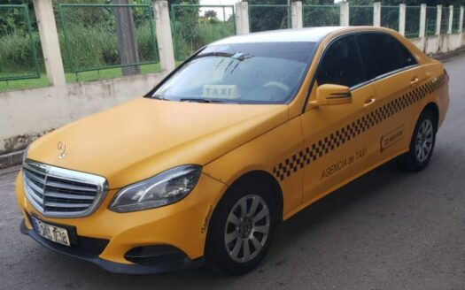

Servicio de transporte privado con conductores de confianza, vehículos cómodos y rutas en toda la isla. Sin complicaciones, con puntualidad y cuidado.
Somos conductores particulares con años de experiencia recorriendo Cuba de punta a punta. Conocemos cada ruta, cada tramo y cada detalle para que tu viaje sea cómodo, seguro y puntual.
No somos una empresa: somos personas reales que cuidan a sus clientes como se cuida a la familia. Tu confianza es nuestra mayor referencia.
Cada viaje es diferente. Por eso adaptamos el servicio a lo que necesitas.
Te buscamos y te llevamos al aeropuerto con tiempo suficiente. Puntualidad garantizada, equipaje sin límite.
¿Necesitas llegar de La Habana a Santiago o Varadero? Te llevamos cómodo, descansado y sin escalas.
Contrata el carro por horas o por todo el día para gestiones, paseos o diligencias a tu ritmo.
Disponibles hasta tarde. Si necesitas transporte de madrugada o en horario difícil, contamos contigo.
Vehículo espacioso para toda la familia. Viajan cómodos, con espacio para maletas y sin apreturas.
Atención especial para visitantes extranjeros. Hablamos de destinos, historia y te guiamos en el camino.
Nuestro vehículo es mantenido con esmero para garantizar comodidad y seguridad en cada viaje.

Personas reales, responsables y comprometidas con tu seguridad.
Licencia de 1ª clase. Conoce cada carretera de Cuba. Puntual, serio y con muy buen trato. Ha llevado turistas de todo el mundo.
Especialista en traslados aeropuerto y viajes nocturnos. Muy confiable con pasajeras que viajan solas. Gran sentido de orientación.
Experto en rutas largas a Oriente y Occidente. Conduce tranquilo y con mucho cuidado. Los clientes siempre repiten con él.
Estas son las rutas más solicitadas. Ver las 11 rutas completas →
Vía Autopista Nacional · Ruta costera disponible
Pinar del Río · Paisajes de mogotes incluidos
La Perla del Sur · Pasaje por Trinidad disponible
Ruta larga · Paradas intermedias disponibles
Terminales 1, 2 y 3 · Llegadas y salidas
¿Otro destino? Consúltanos, cubrimos toda la isla
Escríbenos o llámanos. Respondemos en menos de 1 hora y acordamos todo sin complicaciones.
🔒 Tus datos solo se envían por WhatsApp. No almacenamos información.